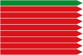
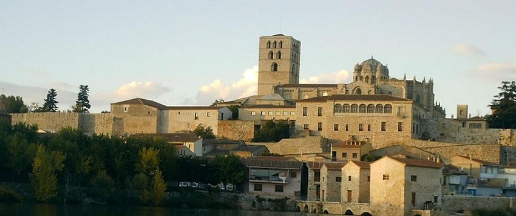

Bienvenido

Turismo en zamora
David Pajares Pardal
2-2-2021

Localidades turisticas
Otras paginas
Coreses
Todas las localidades
Sanzoles
Estadisticas
Toro
Contacto
Benavente
Formulario
Morales del vino
Mas sobre zamora
Oficina de turismo oficial zamora